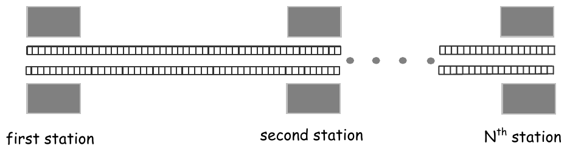

The 27th Annual ACM International Collegiate Programming Contest World Finals sponsored by IBM · Problem H
Secret agent Maria was sent to Algorithms City to carry out an especially dangerous mission. After several thrilling events we find her in the first station of Algorithms City Metro, examining the time table. The Algorithms City Metro consists of a single line with trains running both ways, so its time table is not complicated.
Maria has an appointment with a local spy at the last station of Algorithms City Metro. Maria knows that a powerful organization is after her. She also knows that while waiting at a station, she is at great risk of being caught. To hide in a running train is much safer, so she decides to stay in running trains as much as possible, even if this means traveling backward and forward. Maria needs to know a schedule with minimal waiting time at the stations that gets her to the last station in time for her appointment. You must write a program that finds the total waiting time in a best schedule for Maria.
The Algorithms City Metro system has N stations, consecutively numbered from 1 to N. Trains move in both directions: from the first station to the last station and from the last station back to the first station. The time required for a train to travel between two consecutive stations is fixed since all trains move at the same speed. Trains make a very short stop at each station, which you can ignore for simplicity. Since she is a very fast agent, Maria can always change trains at a station even if the trains involved stop in that station at the same time.

The input file contains several test cases. Each test case consists of seven lines with information as follows.
The last case is followed by a line containing a single zero.
For each test case, print a line containing the case number (starting with 1) and an integer representing the total waiting time in the stations for a best schedule, or the word “impossible” in case Maria is unable to make the appointment. Use the format of the sample output.
4 55 5 10 15 4 0 5 10 20 4 0 5 10 15 4 18 1 2 3 5 0 3 6 10 12 6 0 3 5 7 12 15 2 30 20 1 20 7 1 3 5 7 11 13 17 0
Case Number 1: 5 Case Number 2: 0 Case Number 3: impossible